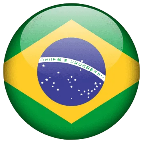
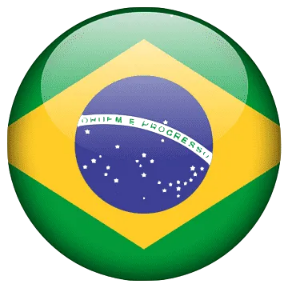

Itália e Suiça
Embarque em uma jornada única pela Itália e Suíça, começando com a Roma Antiga e o Vaticano, seguido de visitas a Capri, Florença e Veneza. Explore a beleza alpina de Lucerna e Interlaken, incluindo a subida ao Jungfraujoch, o topo da Europa. Finalize sua experiência em Milão, a capital da moda, antes de retornar ao Brasil. Um roteiro completo com os melhores destinos da Europa!
1º DIA – ROMA
Chegada em Roma, recepção no aeroporto e traslado para o hotel. Restante do dia livre para explorar a cidade. Jantar e pernoite.
2º DIA – ROMA
Após café da manhã, city tour pela Roma Antiga: Coliseu, Fóruns Imperiais, Praça Veneza, Capitolio e Basílica de São Pedro. À tarde, visita ao Museu do Vaticano e Capela Sistina. Jantar e pernoite.
3º DIA – ROMA / CAPRI
Dia livre ou passeio opcional para Capri, com traslado, visita guiada e almoço. Jantar e pernoite em Roma.
4º DIA – ROMA / ASSIS / FLORENÇA
Saída para Assis, visita às Basílicas de São Francisco e Sta. Maria dos Anjos. Continuação para Florença. Chegada, jantar e pernoite.
5º DIA – FLORENÇA
City tour por Florença: Ponte Vecchio, Praça da Signoria, Basílica de N. S. das Flores e Batistério. Tempo livre. Jantar e pernoite.
6º DIA – FLORENÇA / VENEZA
Saída para Veneza, com parada em Pádua para visitar a Basílica de Santo Antônio. Chegada em Veneza, jantar e pernoite em Mestre.
7º DIA – VENEZA
City tour por Veneza: Praça São Marcos, Basílica, Ponte Rialto e Palácio Ducal. Sugestão de passeio de gôndola opcional. Jantar e pernoite.
8º DIA – VENEZA / LAGO DE GARDA / LUCERNA
Saída para Lucerna, com parada no Lago de Garda. Chegada, jantar e pernoite em Lucerna.
9º DIA – LUCERNA
City tour por Lucerna: centro histórico, ponte medieval de madeira pintada. Tempo livre. Jantar e pernoite.
10º DIA – LUCERNA / INTERLAKEN
Viagem para Interlaken, com parada no Canyon do Rio Aar. Chegada, jantar e pernoite.
11º DIA – INTERLAKEN
Sugestão de passeio opcional ao Jungfraujoch, topo da Europa. Retorno a Interlaken, jantar e pernoite.
12º DIA – INTERLAKEN / GENEBRA / MILÃO
Viagem para Genebra, visita à cidade e continuação para Milão. Chegada, jantar e pernoite.
13º DIA – MILÃO
City tour por Milão, visitando o Duomo e a Galeria Vittorio Emanuele. Tempo livre. Jantar e pernoite.
14º DIA – MILÃO / BRASIL
Traslado para o aeroporto de Malpensa para embarque de volta ao Brasil.